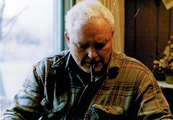

30 years ago DOE Industries began its journey in the small Midwestern town Janesville, Wisconsin. Donald Oakley Ellis (DOE) spent hours working while smoking his pipe in a backyard shop he had built. Don, a skilled craftsman and a natural engineer combined with an inherited entrepreneurial spirit, was primed for a business idea. Don’s sons Michael and Matthew were working for a major ink manufacture in the Seattle area and were instrumental in developing and testing an improved ink proofing kit. With Don’s talents, it was an obvious “perfect fit” for him to start manufacturing the DOE Industries Ink Proofing Kit. Don was a stickler for high quality USA made products and was adamant that the Ink Proofing Kit was designed with the beauty of oiled American Black Walnut. Don produced the kits until it was difficult for him to keep up with demand. Michael, Don’s youngest son, bought the business and builds the kits with the same high quality materials his dad used. DOE Industries Ink Proofing Kits are now produced on Fox Island in the state of Washington. DOE’s products are still 100 percent USA made and will continue to be manufactured in this great country.
